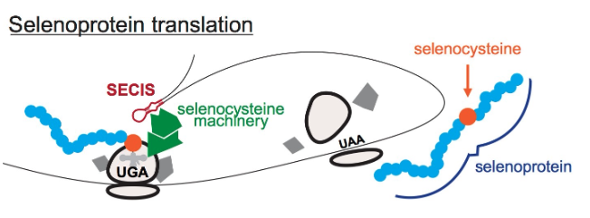
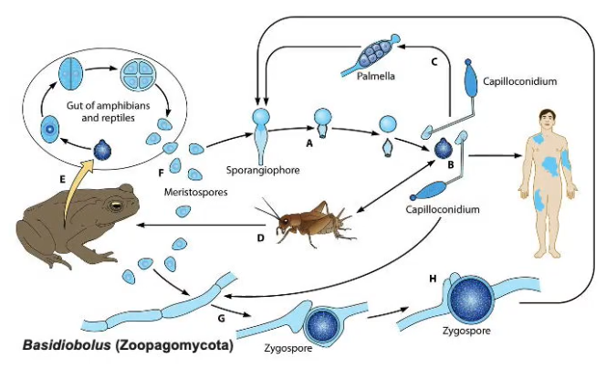

Cell Structure and Components
Core Concepts
- Cell membranes
- composed of lipids, proteins, and carbohydrates
- The plasma membrane
- a selective barrier
- controls the movement of molecules between the inside and the outside of the cell
- The endomembrane system
- interconnected system of membranes
- e.g., nuclear envelope, endoplasmic reticulum, golgi apparartus, lysosomes, vesicles, and plasma membrane
- Mitochondria and Chloroplasts
- Organelles involved in energy harvesting
- Evolved from free-living prokaryotes
Cell Theory
- All organisms are made up of cells
- The cell is the fundamental unit of life
- Cells come from pre-existing cells
Evolution of Cellular Differentiation

Microscopy
- Cryo-EM is developed in 2017

Cell Membranes
Phospholipids
- Phospholipids are amphipathic
- Polar head group (glycerol backbone, phosphate, choline) is hydrophilic
- Fatty acid chains are hydrophobic
Lipid Structures
- Micelle: Large head and bulky with one hydrophobic tail buried

- Bilayer: Small head with two hydrophobic tails
- Liposome: Encoled bilayers composed of phospholipids

Cholesterol
- Component of animal cell membranes
- A buffer to lessen the impact of the temperature on membrane fluidity

Membrane Proteins
- Receptors: allow the cell to receive signals from the environment
- Enzymes: catalyze chemical reactions
- Anchors: attach to another proteins that help maintain cell structure and shape

- Integral Membrane Proteins: permanently associated with cell membranes
- Peripheral Membrane Proteins: temporarily associated with lipid bilayer or with integral membrane proteins through weak noncovalent interactions

- Transporters: move ions or molecules across the membrane

The Plasma Membranes
- Selective barrier that controls the movement of molecules between the inside and the outside of the cell (selectively permeable)
Diffusion
-
The simplest movement into and out of cells
-
Passive transport
-
Simple Diffusion: direct transport of molecules allowed by the cell membrane
-
Facilitated Diffusion: assisted transport of molecules through the action of transmembrane proteins e.g., carriers, channels
Osmosis
-
Diffusion of water
-
Effects of osmosis
Plant Cell Wall and Vacuoles
Vacuole
- Storage of water and nutrients
- Storage and disposal of waste products and
- Supported by turgor pressure: force exerted by water pressing against an object
Magnaporthe grisea and turgor pressure

- M. grisea first attach to the leaves
- Then, synthesize melanin to increase its turgor pressure
- Use the high turgor pressure to penetrate through host organism
- Subseuently occupy the host organism
- Absorb nutrients
Types of Transport

- Does not require energy
- Diffusion, Osmosis
- Through concentration gradient
Active Transport
- Requires energy
- Primary Active Transport
- The pumps that move two molecules in the opposite directions are the antiporter

- The transporters that move two molecules in the same direction are called symporters or co-transporters
- The pumps that move two molecules in the opposite directions are the antiporter
- Secondary Active Transport
- Movement of the coupled molecules is driven by the movement of protins, not direct ATP
- Protons are pumped out of the cell by primary active transport
- Electrochemical gradient from outside to inside the cell is now generated by protons
- The antiporter move a different molecule out of the cell against its concentration gradient
The Endomembrane System
- an interconnected system of membranes that includes the nuclear envelope, ER, Golgi apparatus, lysosomes, vesicles, and plasma membrane
Intercellular Movement of Molecules
- Exocytosis: vesicles generated from the endomembrane system fusing with the plasma membrane to deliver its contents into the extracellular space
- Endocytosis: material from outside the cell being brought into a vesicle

The Nuclear Envelope
- Nuclear Pores: membrane protein openings on the nuclear envelope -> essential for the nucleus to communicate with the rest of the cell
- Small molecules (e.g., ions) can passively diffuse through the pores
- Large protines and RNA require active transport

The Endoplasmic Reticulum
- Largest organelle in most eukaryotic cells
- Factory of lipids and proteins
- Rough ER: lots of ribosomes (reason for its name), synthesize proteins
- Smooth ER: lacks ribosomes, synthesize lipids
- Ribosomes: site of protein synthesis, amino acids are assembled into polypeptides
The Golgi Apparatus
- Modify proteins and lipids produced in the ER
- Sort proteins and lipids as they move to their final destinations (providing pathway)
- Synthesize carbohydrates
Lysosomes
- Degrade proteins, nucleic acids, lipids, and complex carbohydrates e.g., worn-out organelle
- Fuse with macromolecule that needs to be broken down
- Maintain acidic pH through proton pumps
- Useful broken-down molecules are recycled
- Waste molecules are expelled from cell
Mitochondria and Chloroplasts
- Contain their own genomes
- Grow and multiply independently of other membrane compartments
Distinguishing features of plants
- Cell wall
- Vacuole
- Chloroplasts
- Autotroph
Metabolism and Cell Energy
Core concepts
- Metabolism: the set of biochemical reactions that transform biomolecules and transfers energy
- Kinetic energy: energy of motion
- Potential energy: stored energy
- The laws of thermodynamics: law that governs energy flow in biological systems
What do cells need?
- A membrane to separate the inside of the cell from the outside
- A way to encode and transmit information
- ENERGY
Adenosine Triphosphate (ATP)

- ATP stores potential energy using the bonds connecting the phosphate groups
- The energy level stored in each bond is different
- The highest energy bond is at the outer layer
- ATP is used in cellular activities e.g., antiporter activation
- ATP is used in organismal activities e.g., muscle contractions
Metabolism
- The set of biochemical reactions that transforms biomolecules and transfers energy
Metabolic Classification

Types of Reactions
- Catabolism: breakdown of a molecule e.g., breakdown of macromolecules (carbs, proteins, fats, nucleic acids) into subunits (sugars, amino acids, fatty acids, nucleotides)
- Energy is released
- ADP -> ATP + H2O
- Anabolism: construction of a molecule e.g., construction of macromolecules (carbs, proteins, fats, nucleic acids) from subunits (sugars, amino acids, fatty acids, nucleotides)
- Energy is consumed
- ATP + H2O -> ADP
Kinetic Energy
- Energy of motion
Potential Energy
- Stored energy
Chemical Energy
- A form of potential energy held in the chemical bonds between pairs of atoms in a molecule
- Strong bonds have less potential energy
- Weak bonds have more potential energy -> outermost bond of ATP has the highest energy
Packaged Energy
- ATP, a currency of energy
- Cells do not use all the available energy at once
- Cells package the energy into a chemical form that is readily accessible to the cell
- Chemical energy of ATP is held in the bonds linking the phosphate groups
- Break of each bond releases energy
The Laws of Thermodynamics
- Governs energy flow in biological systems
First Law of Thermodynamics
- Conservation of energy

Second Law of Thermodynamics
- Energy transformation

Entropy
- Describes the amount of disorder

Microbiome
- Consists of microbes that are helpful or harmful
- The microbiome associated with the human body has more cells than human cells
- Most are mutualists and commensals
- In smaller numbers are pathogens (promoting disease)
Metabolism and Energy Efficiency of Human Host

- Human provides nutrient
- Microbiota regulate metabolism through hormone signals
Age
- Different age provides different microbiome profile
- That way, age of the host can be predicted using microbiome
- Also the health conditions of the host can be measured

Chemical Reactions an Enzymes
Core Concepts
- Chemical Reactions: involve the breaking and forming of bonds
- Energetic Coupling: spontaneous reactions drive a non-spontaneous reactions
- Enzymes: protein catalysts that can increase the rate of biochemical reactions
- Allosteric Enzymes: an enzyme that is activated or inhibited when binding to another moecule changes its shape
Chemical Reactions
- Catabolic reactions + Anabolic reactions
Free Radicals (Reactive Oxygen Species)
- Free radicals steal electrons
- Normal cells get damaged under oxidative stress due to free radicals
- Consumption of antioxidants can prevent it e.g., Selenium
- Selenoprotein translation generates proteins with selenocysteine that contain abundant selenium

Gibbs Free Energy ($\Delta G$)
- Energonic reaction: reactions with a positive $\Delta G$, require input of energy
- Exergonic reaction: reactions with a negative $\Delta G$, release energy
Energy Available $$\text{Total Energy (enthalpy)} (H)=\text{energy available to do work} + \text{energy lost to entropy}$$ $$\implies \Delta G = \Delta H - T\Delta S$$
- G: Gibbs free energy
- H: Enthalpy
- T: Absolute temperature (K)
- S: Entropy
Gibbs Energy in different reactions
- Catabolic reaction: $$\downarrow\Delta G = \Delta H \downarrow - T\Delta S \uparrow$$
- Anabolic reaction: $$\uparrow\Delta G = \Delta H \uparrow - T\Delta S \downarrow$$
Energetic Coupling
- A process in which spontaneous reactions ($\Delta G<0$) drive a non-spontaneous reaction ($\Delta G > 0$)
e.g.,


Note that the entire process is still considered spontaneous as the Gibbs free energy is negative after driving the energonic reaction
Intermediate Free Energy
- ATP: energy provider
Rate of a Reaction
- Transition state: unstable, has large energy
- Note that reactants require an activation energy, denoted $E_A$, to enter the transition state
Enzymes
Protein catalysts that can increase the rate of biochemical reactions
- Enzyme-Catalzed Reactions $$\text{Substrate} (S) \leftrightarrow \text{Product} (P)$$ $$S + \text{Enzyme} (E) \leftrightarrow ES \leftrightarrow EP \leftrightarrow E + P$$
Enzyme Shape
- Active site binds the substrate and converts it to the product
- Interaction between the substrate and the active site decreases the activate energy required
Active Site Formation
- The amino acids that form the active site are often composed of non-linear sequence of the unfolded enzyme
- Often specific for substrates (Enzyme Specificity)
Activators & Inhibitors
- Activators: activate/promote enzyme activities
- Inhibitors:
- Competitive inhibition: inhibitors bind to the active site of the enzyme, competing with the substrate to reduce the rate of reaction
- Allosteric inhibition: binds to the allosteric site of the allosteric enzymes to alter the shape of the enzyme and prevent substrate bindings
Why are some mushrooms toxic to human beings?
- Amatoxins are selective inhibitors of RNA polymerase II, which is a vital enzyme in the synthesis of mRNA, microRNA, and snRNA
Allosteric Enzymes
Regulation of Chemical Reactions
- Allosteric Enzyme: an enzyme activated or inhibited by the change of shape resulting from the bindings of other molecules
Cellular Respiration I
Core concepts
- Cellular Respiration: a seris of catabolic reactions that convert the energy in fuel molecules into ATP
- Glycolysis: the partial oxidation of glucose, results in the production of pyruvates, ATP, and reduced electron carriers
- Pyruvate Oxidation: pyruvate is oxidized to acetyle-CoA, connecting glycolysis to the citric acid cycle
- The Citric Acid Cycle: results in the complete oxidation of fuel molecules, the generation of ATP and reduced electron carriers
- The Electron Transport Chain: transfers electrons from electron carriers to oxygen using the energy released to pump protons and synthesize ATP by oxidative phosphorylation
Cellular Respiration
A series of catabolic reactions that convert the energy in fuel molecules into ATP
- Break down carbohydrates, lipids, and proteins
- Convert energy in fuel molecules into ATP
- Allow the cell to do work
Stages of Cellular Respiration
- Glycolysis (cytoplasm)
- Pyruvate Oxidation (Mitochondria)
- Citric Acid Cycle (Mitochondria)
- Oxidative Phosphorylation (Mitochondria)
Generating ATP
- Substrate-Level Phosphorylation: ATP synthesis through hydrolysis reaction assisted forming an enzyme/substrate complex
- Oxidative Phosphorylation: Majority of ATP production
Oxidation-Reduction Reactions
- Oxidation: loss of electrons
- Reduction: gain of electrons
- The oxygen atom oxidizes the glucose, it can be called the oxidizing agent
- Glucose is the electron donor and is considered the reducing agent
Electron carriers

- $$NAD^+, NADH$$
- $$FAD, FADH_2$$
- The oxidized forms of these carriers are NAD+ and FAD
- The reduced forms of these carriers are NADH and FADH_2
Glycolysis (Cytoplasm)
The partial oxidation of glucose and results in the production of pyruvate, as well as ATP and reduced electron carriers
Phase 1: Preparatory phase
- Consumption of 2 ATP
- The phosphorylation of glucose traps the molecule inside the cell and de-stabilizes it making it ready for phase 2
Phase 2: Cleavage phase
- 6-carbon sugar is separated into two 3-carbon molecules

Phase 3: Payoff phase
- Production of 4 ATP and 2 NADH

Reactants of Glycolysis $$1 Glucose$$
Products of Glycolysis $$4 ATP - 2 ATP = 2 ATP \text{ (net gain)}$$ $$2 NADH$$ $$2 Pyruvate$$
Pyruvate Oxidation (Mitochondrial Matrix)
Pyruvate is oxidized to acetyle-CoA, connecting glycolysis to the citric acid cycle
- The pyruvate is transported into the mitochondrial matrix from the cytosol
- Then converted to acetyle-CoA within the mitochondria

Reactants of Pyruvate Oxidation $$2 Pyruvates$$
Products of Pyruvate Oxidation $$2 \times 1 CO_2=2CO_2$$ $$2 \times 1 NADH=2NADH$$ $$2 \times 1 \text{Acetyle-CoA}=2\text{Acetyle-CoA}$$
Citric Acid Cycle (Mitochondrial Matrix)
Results in the complete oxidation of fuel molecules and the generation of ATP and reduced electron carriers
- The citric acid cycle is known as the Kreb’s cycle and the TCA cycle
- Takes place in mitochondrial matrix
- Fuel molecules are completely oxidiezed in this stage
Reactants of Citric Acid Cycle
$$2 \text{Acetyle-CoA}$$
Products of Citric Acid Cycle
$$2 \times 1 ATP=2ATP$$ $$2 \times 3 NADH = 6NADH$$ $$2 \times 1 FADH_2=2FADH_2$$ $$2 \times 2 CO_2=4CO_2$$
Electron Transport Chain (Mitochondrial Matrix & Intermembrane Space)
Transfers electrons from electron carriers to oxygen, using the energy released to pump protons and synthesize ATP by oxidative phosphorylation
- Electrons in NADH enter the ETC via complex I
- Electrons in FADH2 enter the ETC via complex II
Electron transport

- Coenyzme is reduced to CoQH2 and transfers electrons from complex I and II to complex III
- Oxygen acts as a final electron acceptor
- 2 Water molecules are produced per 4 electrons from complex IV
Proton transport and ATP synthesis
- Transport of electrons in Complex I, III, and IV is coupled with the transport of protons to the intermembrane space
- The proton gradient has two components
- A chemical gradient resulting from the different concentration of hydrogen ions
- An electrical radient resulting from the difference in charge between the two sides
ATP Synthase

- Utilizes the electrochemical proton gradient for ATP synthesis
- The rotation of the $F_0$ subunit -> roation of the $F_1$ subunit
- The rotation of the $F_1$ subunit -> conformational changes that allow it to catalyze the synthesis of ATP
Cellular Respiration II
Core Concepts
- Anaerobic Metabolism: breakdown of glucose through fermentation, produces a modest amount of ATP
- Fermentation: a process for extracting energy from fuel molecules without relying on oxygen or ETC, use an organic molecule
- Metabolic Integration: metabolic pathways are integrated, allowing control of the energy level of cells
The Flow of Energy in Cellular Respiration
- 4 ATP produced by substrate-level phosphorylation per glucose
- Some energy transferred to 10 NADH and 2 FADH2 per glucose
- ATP Synthase converts the gradient to rotational energy to produce 28 ATP per glucose $$2.5 \times 10 NADH = 25ATP$$ $$1.5 \times 2 FADH_2 = 3ATP$$
Anaerobic Metabolism
- breakdown of glucose through fermentation, produces a modest amount of ATP
Fermentation
- a process for extracting energy from fuel molecules without relying on oxygen or ETC, use an organic molecule
- In the absence of oxygen, pyruvate molecules undergo fermentation instead of pyruvate oxidation
Lactic acid Fermentation
- Occur in anaerobic bacteria
- 2 Pyruvate is produced through glycolysis per glucose
- 2 Pyruvate is reduced to 2 lactic acid
- 2 NADH is oxidized to 2 NAD+
- 2 NAD+ is reused to produce 2 ATP in glycolysis

- e.g., production of yakult

Products of Lactic acid Fermentation $$2 ATP$$ $$2 NAD^+$$ $$2 Lactate$$
Ethanol Fermentation
- Occur in yeast
- 2 Pyruvate is produced through glycolysis per glucose
- 2 Pyruvate lose 2 CO2 and form 2 Acetaldehyde
- 2 Acetaldehyde is reduced to 2 ethanol
- 2 NADH is oxidized to 2 NAD+
- 2 NAD+ is reused to produce 2 ATP in glycolysis

- e.g., wine, beers, bread
Products of Ethanol Fermentation $$2 ATP$$ $$2 NAD^+$$ $$2 CO_2$$ $$2 Ethanol$$
Rising Levels of Atmospheric Oxygen
- Before the presence of atmospheric oxygen, the earliest organism used one of the fermentation pathways
- Fermentation provide quick burst of ATP
- Higher efficiency in certain environments
Metabolic Integration
- Metabolic pathways are integrated, allowing control of the energy level of cells
Glycogen Storage
- Glycogen has a core protein
- A core protein is surrounded by branches of glucose units
- Glycogen is stored in muscle cells -> muscle contraction
- Glycogen is stored in liver cells -> deliver energy and support cells
- Glucose molecules at the end of the branches can be cleaved one at a time
- Cleaved molecule is converted from glucose 1-phosphate to glucose 6-phosphate to undergo glycolysis
How other Sugars contribute to Glycolysis
- Monosaccharide, Disaccharide

- Polysaccharide

Ruminants and Microbes
- Ruminants do not have an enzyme to digest cellulose
- Rumens of herbivore ruminants are colonized by
- Bacteria
- Archaea
- Fungi
- Bacteriophages
- Microbes living in the rumen of the ruminants degrade cellulose
Evolution of Mitochondria
- Some eukaryotes lack mitochondria, possess mitosome instead
Hydrogenosomes in Anaerobic Fungi
- Hydrogenosomes are H2-producing mitochondrial homologs found in some anaerobic microbial eukarytoes
- Hydrogenosomes (H) are small (~0.5 um diameter)
- Spherical or variously elongate organelles
Regulation of Cellular Respiration

- High ADP, NAD+: Low energy state -> stimulate cellular resp.
- High ATP, NADH: High energy state -> inhibit cellular resp.
Photosynthesis I
Core Concepts:
- Photosynthesis: the major pathway by which energy and carbon are incorporated into carbohydrates
- The Calvin Cycle: a three-step process that synthesizes carbohydrates from carbon dioxide
- Capturing Sunlight into Chemical Forms: the light-harvesting reactions that use sunlight to produce the ATP and NADPH required by the Calvin Cycle
Photosynthesis
- the major pathway by which energy and carbon are incorporated into carbohydrates
Energy in Biological Systems
- Photosynthesis provides an entry point to the majority of energy
Survival in Diverse Environment
- In desert, photosynthesis bacteria and unicellular algae form an easily disturbed layor on the surface (desert crust)
- Cyanobacteria lives in the top layer of the surface supporting the other micro organisms underneath through photosynthesis
- Some photosynthetic microbes (e.g., Cab. thermophilum PscA) live in extreme environment e.g., hot spring, glacier
Uncommon Photosynthetic Players
- Nostoc sp.: example of a symbiosis
- Fungi, Geosiphon pyriforme traps Nostoc sp. to photosynthesize

- Lichen: fungi + algae/cyanobacteria
- Multiple fungal elements can be involved

- Multiple fungal elements can be involved
General Equation for Photosynthesis $$CO_2 + H_2O \rightarrow C_6H_{12}O_6 + O_2$$
- Type of a redox reaction
- Oxidation of water is linked with the reduction of carbon dioxide
- Series of redox reaction to oxidize water make up the photosynthetic electron transport chain
Photosystem
- Photosynthesis begins with the absorption of light by protein-pigment complexes (photosystems)
- Absorbed light is used to drive redox reactions
- The movement of electrons through the chain is used to drive the synthesis of ATP and NADPH
- ATP and NADPH are the energy sources required for Calvin cycle
The Chloroplast
- Thylakoid membranes form structures that resemble flattened sacs, grouped into grana

Cellular Respiration vs. Photosynthesis

- Notice that the reactions are the opposite of one another
- Photosynthesis generates fuel molecules (by fixing carbons)
The Calvin Cycle
- a three-step process that synthesizes carbohydrates from carbon dioxide
Three steps
- Carboxylation: addition of CO2 to the 5-carbon compound, RuBP (done by rubisco)
- 6-carbon molecule is broken down into two 3-carbon molecules, 3-PGA
- Reduction: energy input form ATP and NADPH
- NADPH is the reducing agent
- The reduction of 3-PGA requires ATP and NADPH
- One 3C molecule exists (G3P)
- Regeneration of RuBP: 3-carbon compounds are reorganized and combined to produce RuBP
- $$5\times 3C (\text{triose phosphate}) \rightarrow 3 \times 5C (\text{RuBP})$$
Energy Storage
- Excessively produced glucose is stored as starch granules
Sunlight into Chemical Forms
- the light-harvesting reactions that use sunlight to produce the ATP and NADPH required by the Calvin Cycle
Light Absorption
- Light is a type of electromagnetic radiation
- Pigments absorb some wavelegths of visible light
- Pigments look colored as they reflect light enriched in the wavelengths that they do not absorb

Chlorophyll Light Absorption
- Chlorophyll appears green as it poorly absorbs green wavelengths
- Chlorophyll molecules are bound by their tail region to integral membrane proteins in the thylakoid membrane
- Hydrocarbon tail anchors the chlorophyll to cell

- Light energy is absorbed by the photosystems
- Reaction center in the Photosystem II is reduced by the electrons from water
- Reaction center in the Photosystem I is reduced by the Ferredoxin
- Antenna chlorophylls (e.g., chlorophyll b) and accessory pigments (e.g., carotenoid) absorbs and transfers light to the reaction center
- Pigments other than chlorophyll are called accessory pigments
- Pigments other than chlorophyll are called accessory pigments
- Reaction center (e.g., chlorophyll a) with the excited electron reduces the primary electron acceptor
Reaction Center
- Chlorophyll with distinct configuration
- Transfer energy to the electron acceptor
Photosynthesis II
Core Concepts
- Photosynthesis Challenge: challenges to the efficiency of photosynthesis include excess light energy and the oxygenase activity of rubisco
- The evolution of photosynthesis: a profound impact on life on Earth
Photosynthesis Challenge
Reaction Center

Two Photosystems

- Z Scheme describes change in energy level of the electron as it goes through the photosystems
- PS II supplies electrons to the beginning of the ETC
- PS I energizes the electrons with a second input of energy -> provide enough energy to reduce NADP+
- Electron carriers (e.g., Pq, Pc, Fd) are responsible for moving electrons between complexes

Proton Accumulation
- There are two sources of options
- Through water oxidation
- Through the cytochrome b6f complex

Cyclic Electron Transport
- To increase ATP production, electrons are shunted into an alternative pathway via ferredoxin (Fd)
- Fd transfers electrons to Pq, Pq transfers electrons to Cyt, Cyt pumps protons
- Result in more accumulation of protons in lumen
- Increase in ATP, but decrease in NADPH
Photosynthesis Challenge I: excess light energy
- If the light density is too high, the high-energy electrons will lose a safe place to go
- Increased change to create Reactive Oxygen Species (ROS)
Reactive Oxygen Species

- Releases harmful free radical
- NADP+ is in short supply
- -> Either the absorbed light energy or the energy associated electron can be transferred to O2
- -> Formation of ROS
- Mitigation stratiegies:
- Antioxidants can detoxify ROS
- Xanthophylls can slow the formation of ROS
- By reducing excess light energy
- Yellow-orange pigments in the photosystems
Photosynthetic Challenge II: the oxygenase activity of rubisco
- Photorespiration occurs when rubisco adds O2 instead of CO2 to RuBP (rubisco accepts both as substrates)
- Photorespiration can be reduced through C4 cycle (e.g., Corn)
- Increase CO2 concentration
- PEP carboxylase synthesizes 4-C molecules
- CO2 is passed to the bundle-sheath cell, where the Calvin cycle occurs

Photosynthetic Efficiency
-Efficiency of <4%
Cell-free Solar-to-starch Efficiency
- Perfom photosynthesis in lab
- Efficiency of 9%
The evolution of photosynthesis
Step 1: two phosotytems

Step 2: endosymbiosis
Horizontal Gene Transfer (HGT)
Methods prevalent in Prokaryotes
- Conjugation

- DNA from a donor cell is transferred to an adjacent recipient cell
- Pilus tethers the donor to the recipient
- Bring the cells together
- Once closely aligned, DNA passes through the small opening formed
- e.g., genes that confer resistence to antibiotics
- Transformation

- DNA is released to the environment by dead cells and taken up by a recipient cell
- Transduction
- Transfer by a virus
- Viruses that have infected bacterial cells can integrate their DNA into the host bacterial cell
- Before leaving the bacterial host, the viral DNA removes itself
- Sometimes removal of viral DNA involves the additional takeup of the host DNA
HGT between Eukaryotes
- HGT of Carotenoid genes from fungi to Aphids
- HGT of ubiquitine genes from insects to fungi
Note: ghost plant cannt photosynthesize -> steal carbon source from mycorrhizal fungi Note: red maple leaves still can perform photosynthesis through other yellow/brown coloured pigments e.g., carotenoid (in cold weather, separation happens and leaves recieve less nutrition -> not enough to synthesize chlorophylls)
Cell Cycle
Core Concepts
- During cell division, a single parental cell divides into two daughter cells
- Mitotic cell division is the basis of asexual reproduction in unicellular eukaryotes and the process by which cells divide in multicellular eukaryotes
- Meiotic cell division is essential for sexual reproduction, the production of offspring that combine genetic material from two Integral_Peripheral_Membrane_Proteins
Cell Division
- A single parent cell divides into two daughter cells
- The process by which cells make more cells
- Purpose
- Growth
- Cell replacement
- Healing
- reproduction
- Requirements
- Two daughter cells must each receive the full complement of genetic material present in the single parent cell
- The parent cell must be large enough to divide into two and still contribute sufficient cytoplasmic components to each daughter cell
Prokaryotes
Binary Fission: asexual reproduction
- The circular bacterial DNA molecule is attached by proteins to the inner membrane
- DNA replication begins at a specific location and proceeds bidirectionally around the circle
- The newly synthesized DNA molecule is also attached to the inner membrane, near the attachment site of the initial molecule.
- As replication proceeds, the cell elongates symmetrically around the midpoint, separateing the DNA attachment sites.
- Cell division behinds with th synthesis of new membrane and wall material at the midpoint
- Continuted synthesis completes the constriction and separates the dauther cells

| Eukaryotes | Prokaryotes |
|---|---|
| Genome is large and linear | Genome is small and circular |
| DNA found in the nucleus | DNA found in the cytoplasm |
Cell Cycle (Eukaryotes)

- M phase: time during which the parent cell divides into two daughter cells
- Interphase: time between two successive M phases
- Cells make many preparations for division
- e.g., replication of DNA and increase in the cell size
Eukaryotic DNA Organization
- DNA is organized with histones and other proteins into chromatin
- Chromatin can be looped and packaged to form chromosomes
Karyotype
- Profile of the chromosomes in a certain species

Haploid/Diploid
- Haploid: cells with a single set of chromosomes e.g, human gametes
- Diploid: cells with paired chromosomes
Centromeres/Chromatids
- Note that the sister chromatids are analogous to each other as they are duplicated
Mitotic Cell Division
- The basis of asexual reproduction in unicellular eukaryotes and the process by which cells divide in multicellular eukaryotes

Prophase
- Chromosomes condense
- Centrosomes radiate microtubules and migrate to opposite poles
Prometaphase
- Mitrotubules of the mitotic spindle attach to chromosomes
Metaphase
- Chromosomes align in center of cell
Anaphase
- Sister chromatids separate and travel to opposite poles
Telophase
- Nuclear envelope re-forms
- Chromosomes decondense
- The end of mitosis
Cytokineses (Animal)
- Contractile ring forms to divide and cleave the cytoplasm
Cytokineses (Plant)
- Cell plate forms to divide the cytoplasm
Meiotic Cell Division
- Essential for sexual reproduction, the production of offspring that combine gneetic mateirla from two parents
- Meiosis I, homologous chromosomes separate
- Meiosis II, sister chromatids separate
- Results in four daughter cells
- Each daughter cell contains a half number of chromosomes as in the parent cell
- Each daughter cell is genetically unique
Meiosis I
- Reductional division as the number of chromosomes in daughter cells are reduced by half (2n -> n)
- the centromeres do not split during this stage of meiosis
Prophase I
- Chromosomes become visible as thin threads (DNA replication is complete)
- Homologous chromosomes condense, undergo synapsis (gene-for-gene pairing)
- Each pair of homologous chromosomes forms a bivalent (each chromosome consists of two sister chromatids)
- Chromosomes shorten and thicken
- Nuclear envelope break down
Crossing Over
- Meiosis allows homologous chromosomes of maternal and paternal origin to undergo an exchange of DNA sements
- Contribute to the genetic variation
- Crossing over also helpes hold together the bivalents for metaphase I
Prometaphase I
- Spindles attach to kinetochores on chromosomes
Metaphase I
- Homologous pairs line up in center of cell, with bivalents oriented randomly with respect to each other
- Contribute to the genetic variation
Anaphase I
- Homologous chromosomes separate, but sister chromatids do not
Telophase I
- Reformation of nucleus envlope
Cytokinesis
- Separation of cytoplasm
Meiosis II
- The process resembles mitosis except phrophase II (have haploid, not diploid)
- No DNA synthesis between two meiotic divisions
- Meiosis II is called equational division (n -> n) because cells in meiosis II have the same number of chromosomes in the beginning and in the end
Mitosis vs. Meiosis
- During meiosis I, maternal and paternal homologs separate from each other
- During meiosis II, sister chromatids separate from each other (similar to mitosis)
Cytoplasmic Division
- In females, the cytoplasm is divided very unequally in both meiotic divisions to form an egg
- In males, the cytoplasm divides fairly equally, resulting in products of functional sperms
Note that the original number of chrosomomes (2n) is restored through the formation of zygote as a result of combination between Oocyte and a sperm cell
Regulation of Cell Cycle and Cancer
Core Concepts
- Nondisjunction results in extra or missing chromosomes
- Cell cycle regulation: the cell cycle is regulated so that cell division occurs only at appropriate times and places
- Cancer is uncontrolled cell division that results from mutations in genes that control cell division
Nondisjunction
- results in extra or missing chromosomes
First-division
- Result in gametes with an extra or missing chromosome

Second-division
- REsults in gametes with an extra chromosome, a missing chromosome, and normal numbers of chromosomes
Trisomy 21: Down Syndrome
- Three 21 chromosomes present
Nondisjunction in species with different reproduction strategies

Cell cycle regulation
- The cell cycle is regulated so that cell division only occurs when and where appropriate
Regulation
- Cell division cannot occur all the time because uncontrolled division is dangerous and can lead to cancer
- The proteins that appear and disappear cyclically are called cyclins
- Enzymes activated by cyclins are called cyclin-dependent kinases (CDK)
- Once the CDK are activated by cyclins, target proteins are phosphorylated by the cyclin-CDK complexes
- Cell division is promoted by the phosphorylated target proteins
Cyclin level through the Cell Cycle

Cyclin-CDK Complexes
- Cyciln D-CDK and E-CDK (at the end of G1)
- Prepare the cell for DNA replication
- Promotes the expression of histone proteins
- Cyclin A-CDK is involved in the initiation of DNA synthesis (throughout S)
- Prevents the reassembling of the same proteins
- Prevents the re-replicating of the same DNA
- Cycling B-CDK, initiates multiple events associated with mitosis (throughout M)
- Breakdown of the nuclear envelope during prophase
- Formation of mitotic spindles

Checkpoints
DNA Damage Checkpoints
- This arrests the cell at the G1/S transition, giving the cell time to repair the DNA damage
Cancer
- uncontrolled cell division that results form mutations in genes that control cell division

Cancer and oncogenes
- Proto-oncogenes: normal genes that are important in cell division that have the potential to become cancerous if mutated (can be mutated by cancer-causing agents)
- Oncogene: cancer-causing gene
- Tumor suppressors: encode proteins whose normal activities inhibit cell division
Cancer causing agents
- Virus

- Cancerous viral RNA is injected to the host genome
- Pathogens
- Helicobactor Pylori is a cancer-causing bacteria
- HBV, HCV, and HPV are cancer-causing virus
Multiple-Mutation Model for Cancer Development
Types of Cancer Treatment
- Hormone therapy
- Surgery
- Bone Marrow Transplantation
- Chemotherapy
- Targeted theraphy
- Radiation therapy
- Immunotherapy
- Note that cancer is difficult to treat as it begins from healthy cells -> challenge is to selectively kill the affected cells
Cordyceps fungus, Cordycepin, NUC-7738
- Cordycepin from Cordyceps inhibits DEK in the cancer cell
Medicinal mushroms
- The Jack-o-Lantern fungus is bioluminescent (the glow “foxfire”)
- Poisonous but the source of a new cancer drug in clinical trials
Restriction of Isoleucine
- Dietary restriction of isoleucine decreased cancer rate
CRISPR (Clustered Regularly Interspaced Short Palindromic Repeats)
- CRISPR can be used to fight against cancer

- Modify the T-cells with CRISPR -NY-ESO-1 TCR precisely recognizes the cancer cell
Comparison of Mitosis and Meiosis

Fungal Cells
Core Concepts
- Fungi are heterotrophic eukaryotes that feed by absorption
- Fungi reproduces both sexually and asexually, and disperse by spores
Fungi
- Fungi are responsible for
- the decomposition of plants and animal tissues
- locate and break down the complex molecules and bulky tissues
- cycle carbon
- Heterotrophs: depend on pre-existing organic molecules for carbon and energy
- Release enzymes to break down complex organic molecules e.g., starch, cellulose, and lignin
- Absorb the digested organic molecules directly through their cell walls
Fungal Hyphae
- Most fungi are multicellular
- Consist of highly branched filaments, hyphae
- No mode of locomotion
- Use growth to find nourishment
- Mycelium: a network of branching hyphae
Hyphal Growth

Material Transport
- Cell walls are made of chitin, the same compound found in the exoskeleton of insects
- Can transport food and signaling molecules across long distances in mycelia, driven by changes in turgor pressure
- Differences in turgor pressure along hyphae drive bulk flow (similar to phloem transport)

- Allows hyphae to use materials in nutrient-rich locations to fuel hyphal elongation across nutrient-poor locations
- In some early-diverging groups, the hyphae have many nuclei but no cell walls to separate them
- In more advanced groups, nuclear divisions are accompanied by the formation of septa, walls partially divide the cytoplasm into separate cells
Septa variation
- Plugs are developed to regulate the nutrient flow
Yeast
- Yeasts are single-celled fungi (Ascomycota)
- Foundin moist nutrient-rich environments
- Divide by budding

- Common on the surface of plants, and to a lesser extent on the surfaces and in the gut of animals
Decomposition
- Most fungi use dead organic matter as their source of energy and raw materials
- Bacteria and some protists can also subsist on dead organic matter but it is mostly fungi that decompose them back to carbon dioxide and water
Fungal Infections in Living Tissues
- Plants are vulnerable to a diverse array of fungal pathogens
- e.g., rusts, smuts, and molds that cause huge losses in agricultural production
- Aboveground, infection is transmitted by fungal spores
- Belowground, infection is transmitted by hyphae that penetrate the root
Fungal Infections in Invertebrates
- Insects and other invertebrates are susceptible to fungal pathogens
Fungal Infections in Vertebrates
- Rare in vertebrates
- Severe infections are more frequent among fish and amphibians than in mammals
Fungus as a pathogen
- Mucormycosis caused a fungal disease (Mucorales)
- It is difficult for the fungi to meet the virulence factors

Mutualistic Relationships (Mycorrhizal)
- Mycorrhizal fungi supply plant roots with nutrients e.g., phosphorus from the soil
- In return, receives carbohydrates from their host
- Two main types: ectomycorrhiza, endomycorrhiza

- Ectomycorrhiza fungi do not penetrate
- Endomycorrhiza (Arbuscular mycorrhiza) penetrate into the root cells and produce arbuscules -> increase surface area for exchange of materials
Mutualistic Relationships (Endophytes)
- Fungi called endophytes live within leaves and grow within cell walls and in the spaces between cells -> mutualistic
- The insects provide the fungi with shelter, food, and protection from predators and pathogens
- Fungi are used as a food source for the insect
Mutualistic Relationships (Lichens)
- Lichens are associations between fungi and photosynthetic microorganisms e.g., green algae, cyanobacteria -> mutualistic

- The hyphae anchor the lichen to a rock or tree, aid in the uptake and retention of water and nutrients
- The photosynthetic partners provide a source of reduced carbon e.g., carbohydrates
- Cyanobacteria living in lichens provide a source of nitrogen e.g., ammonia
- Fungi and photosynthetic microorganisms exchange nutrients through fungal hyphae that tightly encircle or event penetrate the walls of the photosynthetic cells
- Lichens spread asexually by
- Fragmentation
- The formation of dispersal units consisting of a single photosynthetic cell surrounded by hyphae
Spore Dispersal
- Fungi face two challenges in completing their life cycles:
- Maintaining genetic diversity: must find other individuals to mate with
- Dispersal: must be able to disperse from one place to another
- The probability of any given spore landing on a favourable habitat is low -> produce huge number of spores
- Spores allow fungi to use resources that are patchy in time and in space
Asexual Spore Dispersal
- In many species, asexual spores are produced within sporangia that form at the ends of erect hyphae, facilitating the release of the spores into the air
- A moldy pieces of bread reveals that the surface is covered with hyphae carrying sporangia containing asexual spores

Sexual Spore Dispersal
Fruiting bodies
- Some fungi rely on external agents such as raindrops or animals to move their spores around e.g., Bird’s nest fungus

Fungal Life Cycle
- In most fungi, the sexual phase of the life cycle involves the fusion of hyphal tips rather than specialized reproductive cells, or gametes
- In fungi, the fusion of haploid cells is not immediately followed by the fusion of their nuclei
- Haploid nuclei retain their independent identities, resulting in a heterokaryotic stage
- The cytoplasmic union of two cells (plasmogamy) is not always followed immediately by the fusion of their nuclei (karyogamy)
Parasexual Cycle
- Parasexual fungal species lack an observable sexual cycle
- Use another mechanism of generating genetic diversity
- The crossing over of DNA during mitosis
- The haploid chromosome number is restored not by meiotic division, but by the progressive loss of chromosomes
- The key difference is that parasexual species do not undergo meiosis
Fungal Diversity
Core Concept
- Other than animals, fungi are the most diverse group of eukaryotes
Fungal Phylogeny

Chytrids (Blastocladiomycota + Chytridiomyceta)

- Most chytrids are decomposers
- A few are pathogens of algae or vascular plants
- Many chytrids are single cells with walls or chitin
- Chytrids do not form a true mycelium
- Forms elongated structures rhizoids (not a hyphae)
Zygomycetes (Zoopagomycota + Mucoromycota)
Zoopagomycota
- Constitutes the earliest zygomycetes
- Contains species that are primarily parasites and pathogens of small animals and other fungi i.e., mycoparasites
- Basidiobolus can jump between its hosts

- Orphella: fungus growing on an insect

Mucoromycota
- Characterized by plant associations and plant-based ecologies
- Mycorrhizae
- Root endophytes
- Decomposers
- Rizopus stolonifera: black bread mold
- Pilobolus: can forcibly eject the entire sporangium rather than releasing individual spores
- Fungal Highway Mucor: promote the growth of bacteria, mucorales species impact human beings beneficially through their use in food industry
- Glomeromycetes: a monophyletic group within Mucoromycota
- Almost all occur in association with plant roots with tremendous ecological importance
Dikarya
-
Key feature: every mitotic division is accompanied by the formation of a new septum
-
e.g., All edible mushrooms, truffle, yeast, penicillin, blue cheese, cordyceps
-
Allows fungi to control the number of nuclei within each cell
-
Proliferate in the dikaryotic state
-
Contains two monophyletic subgroups:
- Ascomycetes: meiosis is followed by a single round of mitosis, resulting in asci that contain eight haploid spores
- Basidiomycetes: fruiting bodies
- Life cycle is similar to that of ascomycetes with some exceptions
- fruiting body entirely made up of dikaryotic hyphae
- nuclear fusion takes place in a specialized cell called a basidium
- haploid products of meiosis do not undergo mitosis
- Clamp formation: ensure that each cell is dikaryotic
- Live by forming ectomycorrhizal associations or by decomposing wood and other substrates
- The multicellular fruiting bodies produced by some fungi facilitate the dispersal of sexually produced spores
- Fruiting bodies are highly ordered and compact structures compared to the mycelia from which they grow
- Life cycle is similar to that of ascomycetes with some exceptions
- Ascomycetes: meiosis is followed by a single round of mitosis, resulting in asci that contain eight haploid spores
-
A novel floral mimicry system by Fusarium fungi

-
Here, only D is a healthy flower
Terminologies
hypertonic: having a lower concentration of solute
hypotonic: having a higher concentration of solute
mutualist: a type of relationship between the host and symbiont where both organisms benefit and no one is harmed
commensal: a type of relationsip between the host and symbiontwhere one species obtains food or other benefits from the other without harming or benefiting the latter